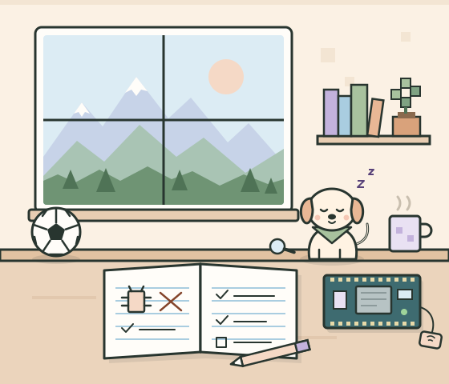

Intelligent interaction
Orchestrating language and vision models so a system can decide who to address and how, not just what to say.
- Python
- LLM/VLM orchestration
- Ollama
- FastAPI
Evidence: HATRIC
Computer Science (Co-op) · University of British Columbia
I’m Annie, a third-year Computer Science student at UBC. I build thoughtful systems that connect people, data, and the world outside.

01 · About me
I’m a third-year Computer Science student in the Co-op program at the University of British Columbia. I like problems that sit between people and systems: a robot deciding who to talk to, a sensor turning a physical object into a record, a model that has to be honest about what it knows.
Right now I’m a CTMS Co-op Student at Vancouver Coastal Health Research Institute, working on research data instruments and workflows, and I’m building HATRIC, a multi-party trivia robot powered by local language and vision models.
Outside of code I’m usually reading, out on a trail somewhere in British Columbia, or playing soccer.
02 · Tech Superpowers
Grouped by the kind of problem, with the project that backs each one up.
Orchestrating language and vision models so a system can decide who to address and how, not just what to say.
Evidence: HATRIC
Embedded hardware that turns real-world events, like a tag passing a reader, into structured data over the network.
Evidence: IoT Inventory Tracker
Building forecasts and then checking them honestly — evaluating chronologically so the model never sees the future.
Evidence: FIFA 2026 Tracker and Predictor
Clean object-oriented structure, data that survives a restart, and validation and workflows that keep records trustworthy.
Evidence: TrackTheTrek and my co-op at VCHRI
03 · Projects
Source on GitHub: IoT Inventory Tracker (opens in a new tab) Related playground demo
83.8% of decisive matches called correctly in a chronological backtest (67 of 80)
The backtest walks through the 2026 tournament’s matches in date order. Before each match, the team with the higher Elo rating is the prediction; only after the result is checked are the ratings updated, so no prediction uses future results. Draws are excluded, which leaves 80 decisive matches.
Source on GitHub: FIFA 2026 Tracker and Predictor (opens in a new tab)
Source on GitHub: TrackTheTrek (opens in a new tab) Related playground demo
04 · Debug Playground
Want to debug them with me? Three small challenges inspired by what I build. Each one starts with a flawed rule. Change the rule, run it again, and watch the behavior change.
Honest label: these are simplified demonstrations inspired by my projects. They are not reconstructions of real bugs from those projects, and none of them run my actual project code.
Bug 1 · inspired by the IoT Inventory Tracker
A reader often sees the same tag several times in a row: the tag lingers, or the reader stutters. Right now, every one of those detections becomes a new inventory entry, so one object shows up as several.
What the reader saw
What got recorded
This is event handling with duplicate suppression. A sensor reports detections; the application decides which detections are meaningful events. The fixed rule keeps a timestamp of each tag’s last accepted entry and drops any detection of that same tag within a 2-second window. A different tag is never blocked, and the same tag scanned again after the window is recorded as a new entry.
Real systems choose this trade-off carefully. A window that’s too short lets duplicates through; one that’s too long can swallow a legitimate re-scan. Some systems track check-in/check-out state instead. This demo only illustrates the idea; it doesn’t reproduce my tracker’s implementation.
Read about the IoT Inventory Tracker · Its source on GitHub (opens in a new tab)
Bug 2 · inspired by TrackTheTrek
You log a hike, close the journal, and open it again… and the hike is gone. The journal only keeps entries in temporary memory, which disappears when the app closes.
Key annie-portfolio:debug-journal:v1
(nothing stored)
This is about where state lives. In temporary mode the entries exist only in a JavaScript variable, so “reopening” starts with fresh, empty memory. In persistent mode, every change is serialized to JSON and written to localStorage, and reopening reads it back and validates it before showing it. Because it’s real storage, your hike is still here even if you reload the whole page.
This browser demo uses localStorage. The actual TrackTheTrek project is a Java desktop app that persists hikes to a JSON file, which is the same idea in a different environment. “Reset this demo” deletes only this demo’s storage keys. If your browser blocks storage, the persistent option is turned off and the rest of the page works normally.
Read about TrackTheTrek · Its source on GitHub (opens in a new tab)
Bug 3 · inspired by HATRIC
A trivia robot is hosting three players. Its turn-taking rule always picks whoever sits in Seat 1, so one person answers every question while the others wait. It even asks Seat 1 when nobody is sitting there.
Hi! I’m a pretend trivia host. Press “Run 1 turn” to ask a question.
This is a selection rule: given the current state (who’s present and how many turns each has had), pick the next person to address. The flawed rule is a constant: it returns Seat 1 no matter what. The fixed rule filters to eligible players, sorts by fewest turns, breaks ties by longest wait and then seat number, and takes the first result. Because the tie-break is deterministic, the same state always produces the same choice, which also makes the behavior easy to explain and test.
This is a scripted simulation. It is not a live language model and not a reproduction of HATRIC, where these decisions come from an LLM agent working with vision input. It just shows why “who hasn’t spoken yet?” is worth encoding explicitly.
05 · Experience & Community
Vancouver Coastal Health Research Institute · Vancouver, BC
UBC Computer Science Student Society · Vancouver, BC
GIRLsmarts4tech · Vancouver, BC
06 · Contact
I’m happy to talk about co-op and internship roles, projects, or a good trail. Email is the best way to reach me.